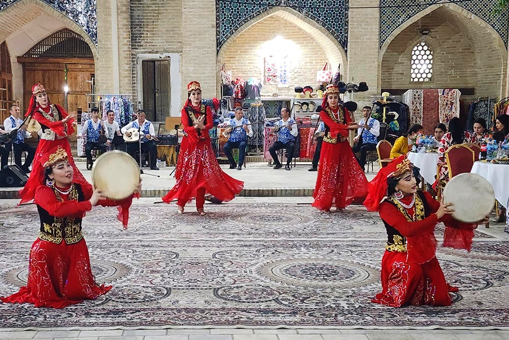

[ CITY 03 · SOUL OF THE OLD WORLD · JUN 14–15 ] [ ГОРОД 03 · ДУША СТАРОГО МИРА · 14–15 ИЮН ]
BUKHARA. БУХАРА.
the best-preserved medieval city in central asia. 140 monuments, almost no cars in the old town. the plov is done differently here. you'll forget what year it is. самый хорошо сохранившийся средневековый город средней азии. 140 памятников, почти ни одной машины в старом городе. плов тут делают иначе. ты забудешь, какой сейчас год.
JUN 1414.06 · SUN · ARRIVAL · MADRASAH DANCES· ВС · ПРИЕЗД · ТАНЦЫ В МЕДРЕСЕ
morning — the train. then lunch in a chaikhana courtyard and dances! (we rested yesterday to survive this day :) утром — поезд. дальше обед во дворе чайханы и танцы! (мы отдыхали вчера, чтобы выдержать этот день :)
train arrives at BUXORO-1поезд приходит на BUXORO-1
(Kagan), 12 km from town.(каган), 12 км от города.
→ taxi · BUXORO-1 → Mercure ≈ 30 min (Yandex Go), drop bags→ такси · BUXORO-1 → mercure ≈ 30 мин (Yandex Go), бросаем вещи
→ 5–10 min walk from Mercure to the restaurant→ пешком от mercure 5–10 мин до ресторана
Joy Chaikhana — 19th-century caravanseraijoy chaikhana — каравансарай xix века
lunch in a courtyard that's been feeding travellers for 200 years.обед во дворе, который кормит путников уже 200 лет.
stay in the hotel before evening — Mercure is in the centre, you'll walk everywhereотдых в отеле перед вечером — mercure в центре, везде пешком
↓ ideas in the free-time menu↓ идеи в меню свободного времениNadir Divan-Begi madrasahнадир диван-беги
folklore dance show in the courtyard of the madrasah + dinner.фольклорное танцевальное шоу во дворе медресе + ужин.

JUN 1515.06 · MON · LAST MORNING · THEN THE TRAIN· ПН · ПОСЛЕДНЕЕ УТРО · ПОТОМ ПОЕЗД
the last full day. morning in bukhara, then 4 hours on the train to tashkent — maybe just enough to digest all the plov and the emotions. последний полный день. утро в бухаре, потом 4 часа на поезде в ташкент — возможно, хватит, чтобы переварить весь плов и эмоции.
a perfect time to wander the old town.самое время погулять по старому городу.
↓ ideas in the free-time menu↓ идеи в меню свободного времени→ ⚠️ taxi · Mercure → BUXORO-1 (Kagan) ≈ 30 min (Yandex Go) — leave by 14:30 for the 16:16 train!→ ⚠️ такси · mercure → BUXORO-1 (каган) ≈ 30 мин (Yandex Go) — выезд к 14:30 на поезд 16:16!
train Afrosiyob 765 — Bukhara → Tashkentпоезд афросиёб 765 — бухара → ташкент
4h 14m (vagon 05).4ч 14м (вагон 05).
WHAT TO DO IN YOUR FREE TIME ЧЕМ ЗАНЯТЬСЯ В СВОБОДНОЕ ВРЕМЯ
for the hours between group things. pick by mood. для часов между общими активностями. выбирай по настроению.
nothing matches those filters. .ничего не подходит под фильтры. .

Poi-Kalyan complex — the Kalon minaret (1127), the mosque, the Mir-i-Arab madrasah. Genghis Khan spared the minaret — the only thing he did.комплекс пои-калян — минарет калян (1127), мечеть, медресе мир-и-араб. чингисхан пощадил минарет — единственное, что он сделал.

Lyabi-Hauz + coffee under a 1400-year-old mulberry tree.ляби-хауз + кофе у тутового дерева возрастом 1400 лет.

Toki Trading Domes — medieval covered markets, +20°C inside. three domes (spices, silk, jewellery).торговые купола токи — крытые средневековые рынки, +20°C внутри. три купола (специи, шёлк, украшения).

sunrise walk 6:00–8:00 (for early risers): Chor-Minor → Poi-Kalyan → the Ark fortressрассветная прогулка 6:00–8:00 (для жаворонков): чор-минор → пои-калян → крепость арк

Sitorai Mohi-Hosa — the emirs' summer palace, out of town (~15 min taxi).ситораи мохи-хоса — летняя резиденция эмиров, за городом (~15 мин такси).

Bozori Kord hammam — operating since the 14th century. Quick $30 / Classic+massage $45. (a good way to leave the trip relaxed.)хаммам бозори корд — действует с xiv века. quick $30 / classic+массаж $45. (хороший способ уехать расслабленным.)
taxi worth it for the plov.за пловом стоит такси.
ikat robes, suzani, silk, spices — right inside the medieval covered markets.ikat-халаты, сузане, шёлк, специи — прямо в средневековых крытых рынках.
embroidered panels & covers. check the back: handmade = tiny knots; a silk base beats cotton.вышитые панно/покрывала. проверять изнанку: ручная работа = мелкие узелки; шёлковая основа лучше хлопковой.
gold embroidery, miniatures, wooden boxes.золотое шитьё, миниатюры, деревянные шкатулки.
saffron (5–10× cheaper than in Russia), spices, dried fruit, nuts.шафран (в 5–10 раз дешевле РФ), специи, сухофрукты, орехи.
JUN 15 · BACK TO TASHKENT 15.06 · ОБРАТНО В ТАШКЕНТ
a 4-hour train, then one final dinner. the trip ends where it started. 4 часа поезда, потом финальный ужин. трип заканчивается там, где начался.